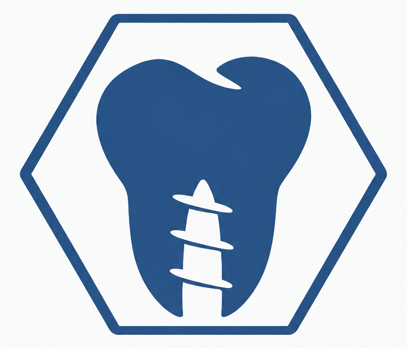

Panoul de administrare
Conținutul JoianDent se gestionează din Pages CMS. Modificările sunt salvate în GitHub și publicate automat de serviciul de găzduire conectat.
Deschide Pages CMS →La prima utilizare, autentifică-te cu GitHub și autorizează accesul numai la repository-ul JoianDent. Apoi deschide secțiunea dorită. Nu există parolă implicită a site-ului.
← Înapoi la site